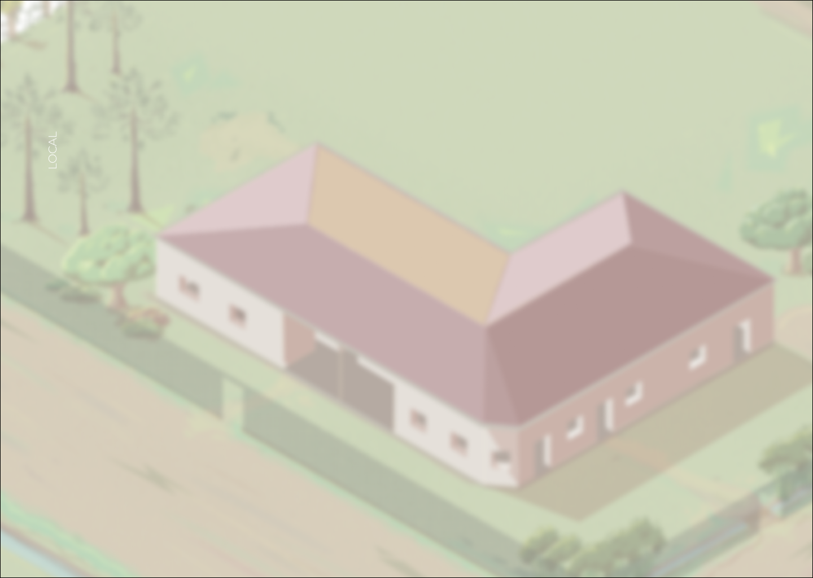
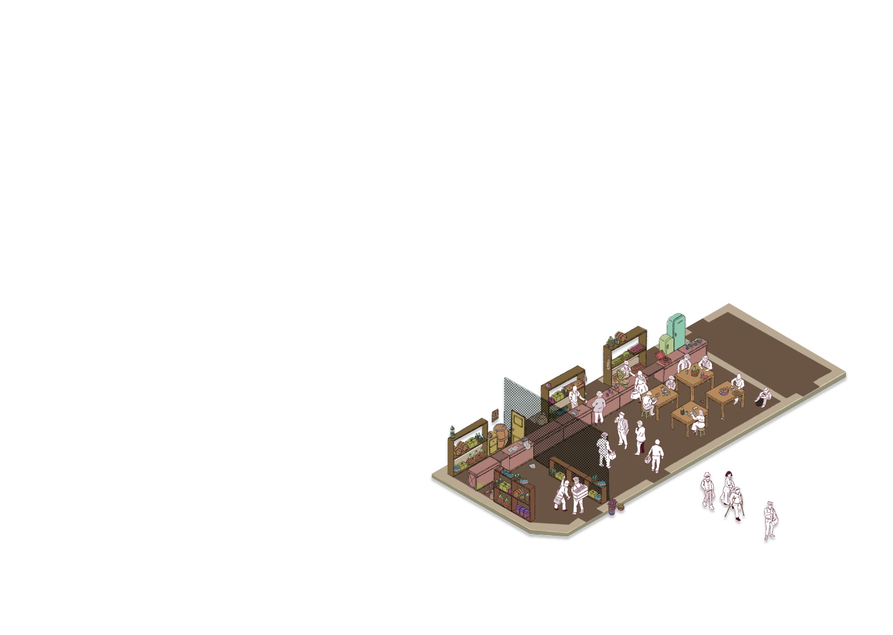

El local
En el local se podía ver diariamente la visita de vecinos y personas de la comunidad que venían a comprar productos, o para sentarse a compartir un plato o algún trago.
Tras la barra, el surtido de productos se exponía en frascos y sacos, midiendo las porciones de legumbres, harina o azúcar con la balanza abanico y la poruña para el surtido a las bolsas de los comensales.
Por otra parte, una reja separa el área reservada para el licor. Como también las bodegas guardaban la reserva de alimentos y bebidas. En años más recientes se pudo disponer de refrigeradores y congeladores para la conservación.

